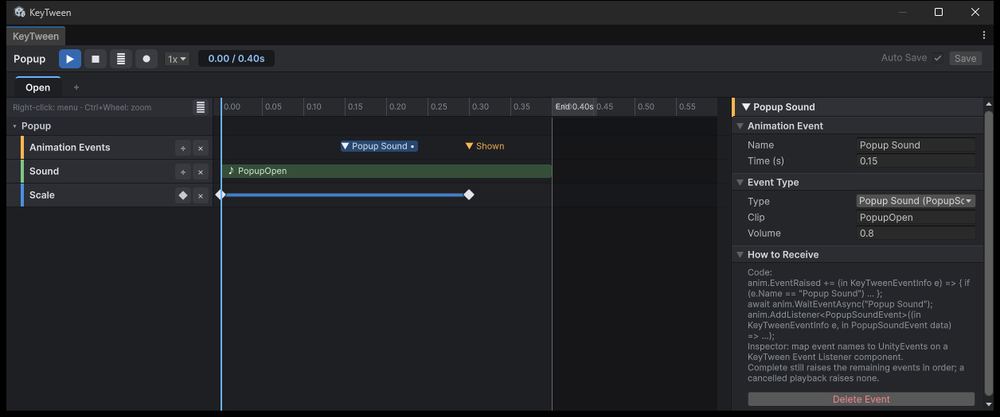

이벤트와 사운드
상태의 정해진 시간에 코드에 신호를 보내거나 소리를 낼 수 있습니다. 둘 다 트랙 추가 창에서 트랙으로 추가합니다.
연출과 게임 로직의 타이밍을 맞출 때 씁니다. 예를 들어 칼을 휘두르는 상태의 0.3초(칼이 닿는 순간)에 Hit 이벤트를 두면, 코드는 그때 대미지를 주고 파티클을 띄웁니다. 연출의 키를 옮겨도 이벤트만 같이 옮기면 되고, 코드의 대기 시간을 고칠 필요가 없습니다.
이벤트 추가하기
- 트랙 추가 창에서
Animation Events를 고릅니다. 이벤트 트랙이 생깁니다. - 트랙 머리의 + 버튼을 누르거나 줄을 더블클릭합니다. 메뉴에서
Name Only나 데이터 struct를 고르면 이벤트가 생깁니다. - 인스펙터에서 Name과 **Time (s)**을 정합니다. 종류는 아래 Event Type 칸에서 바꿀 수 있습니다.
이벤트는 드래그해서 옮깁니다.
이벤트 Type
Type은 다음 중 하나입니다.
Name Only- 코드에서
[KeyTweenEvent]를 붙인 struct
struct를 고르면 그 필드를 인스펙터에서 바로 편집할 수 있습니다. 편집할 수 있는 필드 형식은 다음과 같습니다.
- float, int, bool, string
- Vector2/3
- Color
- enum

이벤트 받기
이벤트는 다음 두 방법으로 받습니다.
코드에서 받습니다. 자세한 내용은 API를 참고하세요.
anim.EventRaised += (in KeyTweenEventInfo e) => { if (e.Name == "Hit") DealDamage(); }; await anim.WaitEventAsync("Hit"); // 또는 한 번만 기다리기KeyTween Event Listener컴포넌트로 받습니다. 이 컴포넌트는 이벤트 이름마다 UnityEvent를 연결합니다.
사운드 추가하기
- 트랙 추가 창에서
Sound를 고릅니다. 사운드 트랙이 생깁니다. - 트랙 머리의 + 버튼을 누르거나, 줄을 더블클릭하거나, AudioClip을 줄에 끌어다 놓아 사운드를 추가합니다.
- 인스펙터에서 Clip, Volume, Time을 정합니다.
- ▶ Preview를 눌러 소리를 들어 봅니다.
타임라인의 막대 길이는 클립 길이와 같습니다.
소리가 나는 AudioSource
소리는 다음 순서로 찾은 AudioSource에서 재생됩니다. 그래서 UI 오브젝트마다 AudioSource를 붙일 필요가 없습니다.
- 사운드 트랙 인스펙터의 Audio Source (optional)
- 코드에서 정한
KeyTween.audioSource(인스펙터에서는 고칠 수 없습니다) - 둘 다 없으면 숨겨진 공용 2D AudioSource
사운드와 상태 길이
상태 길이에는 사운드가 끝나는 시간까지 포함됩니다. 그래서 닫기 연출이 끝난 뒤 오브젝트를 Destroy해도 소리가 끊기지 않습니다.